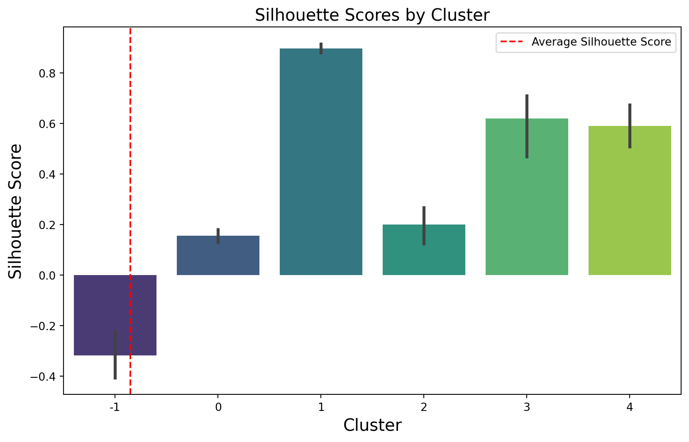

import pandas as pd
import numpy as np
import matplotlib.pyplot as pl
import seaborn as snsImporting libraries
data=pd.read_csv('air_quality_data.csv')
data.head()| State | County | Year | Days with AQI | Good Days | Moderate Days | Unhealthy for Sensitive Groups Days | Unhealthy Days | Very Unhealthy Days | Hazardous Days | Max AQI | 90th Percentile AQI | Median AQI | Days CO | Days NO2 | Days Ozone | Days PM2.5 | Days PM10 | |
|---|---|---|---|---|---|---|---|---|---|---|---|---|---|---|---|---|---|---|
| 0 | Alabama | Baldwin | 2022 | 141 | 119 | 22 | 0 | 0 | 0 | 0 | 96 | 52 | 40 | 0 | 0 | 114 | 27 | 0 |
| 1 | Alabama | Clay | 2022 | 58 | 50 | 8 | 0 | 0 | 0 | 0 | 64 | 52 | 27 | 0 | 0 | 0 | 58 | 0 |
| 2 | Alabama | DeKalb | 2022 | 242 | 225 | 17 | 0 | 0 | 0 | 0 | 97 | 48 | 37 | 0 | 0 | 224 | 18 | 0 |
| 3 | Alabama | Elmore | 2022 | 117 | 110 | 7 | 0 | 0 | 0 | 0 | 67 | 47 | 37 | 0 | 0 | 117 | 0 | 0 |
| 4 | Alabama | Etowah | 2022 | 179 | 140 | 39 | 0 | 0 | 0 | 0 | 93 | 58 | 42 | 0 | 0 | 76 | 103 | 0 |
data.apply(pd.isnull).sum()/data.shape[0]State 0.0
County 0.0
Year 0.0
Days with AQI 0.0
Good Days 0.0
Moderate Days 0.0
Unhealthy for Sensitive Groups Days 0.0
Unhealthy Days 0.0
Very Unhealthy Days 0.0
Hazardous Days 0.0
Max AQI 0.0
90th Percentile AQI 0.0
Median AQI 0.0
Days CO 0.0
Days NO2 0.0
Days Ozone 0.0
Days PM2.5 0.0
Days PM10 0.0
dtype: float64data.describe()| Year | Days with AQI | Good Days | Moderate Days | Unhealthy for Sensitive Groups Days | Unhealthy Days | Very Unhealthy Days | Hazardous Days | Max AQI | 90th Percentile AQI | Median AQI | Days CO | Days NO2 | Days Ozone | Days PM2.5 | Days PM10 | |
|---|---|---|---|---|---|---|---|---|---|---|---|---|---|---|---|---|
| count | 966.0 | 966.000000 | 966.000000 | 966.000000 | 966.000000 | 966.000000 | 966.000000 | 966.000000 | 966.000000 | 966.000000 | 966.000000 | 966.000000 | 966.000000 | 966.000000 | 966.000000 | 966.000000 |
| mean | 2022.0 | 208.917184 | 173.689441 | 33.388199 | 1.566253 | 0.214286 | 0.026915 | 0.032091 | 112.774327 | 55.115942 | 36.821946 | 0.666667 | 4.330228 | 127.083851 | 68.909938 | 7.926501 |
| std | 0.0 | 58.371700 | 52.564146 | 29.654791 | 4.591190 | 1.401200 | 0.267981 | 0.419727 | 254.401084 | 14.632954 | 9.672426 | 5.107616 | 19.372906 | 82.596442 | 69.893621 | 30.194461 |
| min | 2022.0 | 4.000000 | 4.000000 | 0.000000 | 0.000000 | 0.000000 | 0.000000 | 0.000000 | 8.000000 | 5.000000 | 0.000000 | 0.000000 | 0.000000 | 0.000000 | 0.000000 | 0.000000 |
| 25% | 2022.0 | 181.000000 | 147.250000 | 12.000000 | 0.000000 | 0.000000 | 0.000000 | 0.000000 | 77.000000 | 48.000000 | 35.000000 | 0.000000 | 0.000000 | 76.000000 | 0.000000 | 0.000000 |
| 50% | 2022.0 | 212.000000 | 174.000000 | 24.000000 | 0.000000 | 0.000000 | 0.000000 | 0.000000 | 95.000000 | 54.000000 | 39.000000 | 0.000000 | 0.000000 | 131.500000 | 58.000000 | 0.000000 |
| 75% | 2022.0 | 261.750000 | 213.000000 | 46.750000 | 1.000000 | 0.000000 | 0.000000 | 0.000000 | 115.000000 | 61.000000 | 42.000000 | 0.000000 | 0.000000 | 188.000000 | 107.000000 | 0.000000 |
| max | 2022.0 | 306.000000 | 293.000000 | 197.000000 | 57.000000 | 20.000000 | 6.000000 | 10.000000 | 7577.000000 | 151.000000 | 77.000000 | 77.000000 | 209.000000 | 299.000000 | 303.000000 | 299.000000 |
air=data[["State","County","Max AQI","90th Percentile AQI","Days PM2.5"]].copy()
air.columns=["State","County","Max AQI","90th Percentile AQI","Days PM2.5"]
air.head()| State | County | Max AQI | 90th Percentile AQI | Days PM2.5 | |
|---|---|---|---|---|---|
| 0 | Alabama | Baldwin | 96 | 52 | 27 |
| 1 | Alabama | Clay | 64 | 52 | 58 |
| 2 | Alabama | DeKalb | 97 | 48 | 18 |
| 3 | Alabama | Elmore | 67 | 47 | 0 |
| 4 | Alabama | Etowah | 93 | 58 | 103 |
#to save these features for the future
State = air['State'].tolist()
County = air['County'].tolist()#sns.pairplot(air)
#pl.show()air = pd.DataFrame(air)
# Drop the "State" and "County" columns
air = air.drop(columns=["State", "County"])from sklearn.preprocessing import MinMaxScaler
# Initialize the Min-Max scaler
scaler = MinMaxScaler()
# Fit and transform the entire "air" dataset
air = scaler.fit_transform(air)
# "normalized_air" now contains the scaled features in the [0, 1] range
airarray([[0.01162637, 0.32191781, 0.08910891],
[0.0073986 , 0.32191781, 0.19141914],
[0.01175849, 0.29452055, 0.05940594],
...,
[0.01215484, 0.29452055, 0.00660066],
[0.00620954, 0.08219178, 0. ],
[0.00660589, 0.26712329, 0. ]])from sklearn.decomposition import PCA
# Initialize PCA with the desired number of components (e.g., 2 for a 2D visualization)
num_components = 2
pca = PCA(n_components=num_components)
# Fit and transform your normalized data with PCA
new_air = pca.fit_transform(air)from sklearn.neighbors import NearestNeighbors
# Assuming you have normalized your data and stored it in 'normalized_air'
# Determine the number of nearest neighbors (k) for the k-distance plot
k = 5 # You can adjust this value
# Fit a Nearest Neighbors model to the normalized data
nn_model = NearestNeighbors(n_neighbors=k)
nn_model.fit(air)
# Calculate distances to the k-th nearest neighbor for each data point
distances, _ = nn_model.kneighbors(air)
# Sort the distances and create a k-distance plot
sorted_distances = np.sort(distances[:, -1]) # Sort by the distance to the k-th neighbor
pl.plot(np.arange(1, len(sorted_distances) + 1), sorted_distances)
pl.xlabel("Data Point Index")
pl.ylabel(f"Distance to {k}-th Nearest Neighbor")
pl.title(f"{k}-Distance Plot")
pl.grid(True)
# Display the plot
pl.show()from sklearn.cluster import DBSCAN
from sklearn.metrics import silhouette_score
# Your data
X = new_air # Your data points
best_eps = None
best_min_samples = None
best_score = -1
for eps in np.arange(0.1, 1.0, 0.1): # Adjust the range as needed
for min_samples in range(2, 20): # Adjust the range as needed
dbscan = DBSCAN(eps=eps, min_samples=min_samples)
labels = dbscan.fit_predict(X)
if len(set(labels)) > 1: # Ensure more than one cluster is formed
score = silhouette_score(X, labels)
if score > best_score:
best_score = score
best_eps = eps
best_min_samples = min_samples
print(f"Best eps: {best_eps}, Best min_samples: {best_min_samples}, Best Silhouette Score: {best_score}")Best eps: 0.2, Best min_samples: 10, Best Silhouette Score: 0.5989772983728686from sklearn.cluster import DBSCAN
# Initialize the DBSCAN model with your chosen parameters
dbscan = DBSCAN(eps=0.05, min_samples=5)
# Fit the model to the PCA-transformed data
dbscan.fit(new_air)
# Access the cluster labels assigned to each data point
cluster_labels = dbscan.labels_
# Plot the clusters using the first two principal components
pl.figure(figsize=(10, 6))
pl.scatter(new_air[:, 0], new_air[:, 1], c=cluster_labels, cmap='viridis')
pl.xlabel("Principal Component 1")
pl.ylabel("Principal Component 2")
pl.title("DBSCAN Clustering Results after PCA")
pl.colorbar()
pl.show()# Assuming you have cluster labels and PCA-transformed data
# Create a DataFrame that includes the cluster labels
data_with_clusters = pd.DataFrame({
'Cluster': cluster_labels,
'PCA Component 1': new_air[:, 0],
'PCA Component 2': new_air[:, 1]
})
# Create a box plot for PCA Component 1 by cluster
pl.figure(figsize=(12, 6))
sns.boxplot(x='Cluster', y='PCA Component 1', data=data_with_clusters)
pl.xlabel('Cluster')
pl.ylabel('PCA Component 1')
pl.title('Box Plot of PCA Component 1 by Cluster')
pl.show()
# Create a box plot for PCA Component 2 by cluster
pl.figure(figsize=(12, 6))
sns.boxplot(x='Cluster', y='PCA Component 2', data=data_with_clusters)
pl.xlabel('Cluster')
pl.ylabel('PCA Component 2')
pl.title('Box Plot of PCA Component 2 by Cluster')
pl.show()# Create a new DataFrame to combine the results
new_air = pd.DataFrame({'x': new_air[:, 0], 'y': new_air[:, 1], 'Cluster': cluster_labels, 'State': State})
# Display the resulting DataFrame
new_air| x | y | Cluster | State | |
|---|---|---|---|---|
| 0 | -0.138111 | -0.022733 | 0 | Alabama |
| 1 | -0.035805 | -0.022062 | 0 | Alabama |
| 2 | -0.167556 | -0.050336 | 0 | Alabama |
| 3 | -0.226895 | -0.057990 | 0 | Alabama |
| 4 | 0.112319 | 0.020583 | 0 | Alabama |
| ... | ... | ... | ... | ... |
| 961 | -0.224044 | -0.009787 | 0 | Wyoming |
| 962 | -0.125231 | 0.012099 | 0 | Wyoming |
| 963 | -0.220359 | -0.050802 | 0 | Wyoming |
| 964 | -0.224973 | -0.263103 | 0 | Wyoming |
| 965 | -0.226703 | -0.078571 | 0 | Wyoming |
966 rows × 4 columns
import matplotlib.pyplot as plt
import seaborn as sns
# Assuming you have cluster labels, PCA-transformed data, and State information
# Create a DataFrame that includes cluster labels, PCA components, and State
data_with_clusters = pd.DataFrame({
'Cluster': cluster_labels,
'PCA Component 1': new_air['x'], # Assuming 'x' represents PCA Component 1
'PCA Component 2': new_air['y'], # Assuming 'y' represents PCA Component 2
'State': State # Assuming 'State' is available in your data
})
# Get unique cluster labels
unique_clusters = data_with_clusters['Cluster'].unique()
# Iterate through clusters and create individual scatter plots
for cluster in unique_clusters:
plt.figure(figsize=(10, 6))
ax = sns.scatterplot(
x="PCA Component 1",
y="PCA Component 2",
data=data_with_clusters[data_with_clusters['Cluster'] == cluster], # Filter data by cluster
palette="viridis",
s=100,
)
# Add labels for individual data points
for x, y, state in zip(
data_with_clusters[data_with_clusters['Cluster'] == cluster]['PCA Component 1'],
data_with_clusters[data_with_clusters['Cluster'] == cluster]['PCA Component 2'],
data_with_clusters[data_with_clusters['Cluster'] == cluster]['State'],
):
plt.text(x, y, state, fontsize=10, alpha=0.8)
# Set the plot limits and labels
ax.set(ylim=(-3, 3))
plt.xlabel("Principal Component 1", fontsize=15)
plt.ylabel("Principal Component 2", fontsize=15)
# Set the title for the individual cluster plot
plt.title(f'Scatter Plot for Cluster {cluster}', fontsize=15)
# Display the plot
plt.show()C:\Users\mehra\AppData\Local\Temp\ipykernel_21280\1173522113.py:19: UserWarning:
Ignoring `palette` because no `hue` variable has been assigned.
C:\Users\mehra\AppData\Local\Temp\ipykernel_21280\1173522113.py:19: UserWarning:
Ignoring `palette` because no `hue` variable has been assigned.
C:\Users\mehra\AppData\Local\Temp\ipykernel_21280\1173522113.py:19: UserWarning:
Ignoring `palette` because no `hue` variable has been assigned.
C:\Users\mehra\AppData\Local\Temp\ipykernel_21280\1173522113.py:19: UserWarning:
Ignoring `palette` because no `hue` variable has been assigned.
C:\Users\mehra\AppData\Local\Temp\ipykernel_21280\1173522113.py:19: UserWarning:
Ignoring `palette` because no `hue` variable has been assigned.
C:\Users\mehra\AppData\Local\Temp\ipykernel_21280\1173522113.py:19: UserWarning:
Ignoring `palette` because no `hue` variable has been assigned.
import matplotlib.pyplot as plt
import seaborn as sns
# Assuming you have cluster labels, PCA-transformed data, and State information
# Create a DataFrame that includes cluster labels, PCA components, and State
data_with_clusters = pd.DataFrame({
'Cluster': cluster_labels,
'PCA Component 1': new_air['x'], # Assuming 'x' represents PCA Component 1
'PCA Component 2': new_air['y'], # Assuming 'y' represents PCA Component 2
'State': State # Assuming 'State' is available in your data
})
# Get unique cluster labels
unique_clusters = data_with_clusters['Cluster'].unique()
# Iterate through clusters and create individual bar plots for the 'State' variable
for cluster in unique_clusters:
plt.figure(figsize=(10, 6))
# Count the occurrences of each 'State' within the cluster
state_counts = data_with_clusters[data_with_clusters['Cluster'] == cluster]['State'].value_counts()
# Create a bar plot for the 'State' variable within the cluster
state_counts.plot(kind='bar', color='teal')
plt.xlabel("State", fontsize=15)
plt.ylabel("Count", fontsize=15)
plt.title(f'Bar Plot for States in Cluster {cluster}', fontsize=15)
plt.show()
from sklearn.metrics import silhouette_samples, silhouette_score
# Compute silhouette scores for each data point
silhouette_avg = silhouette_score(new_air[['x', 'y']], cluster_labels)
sample_silhouette_values = silhouette_samples(new_air[['x', 'y']], cluster_labels)
# Add silhouette scores to the DataFrame
new_air['Silhouette Score'] = sample_silhouette_values
print(f"Silhouette Score: {silhouette_avg}")Silhouette Score: 0.14829996909278287import numpy as np
# Create a bar plot to visualize the silhouette scores by cluster
plt.figure(figsize=(10, 6))
ax = sns.barplot(x=cluster_labels, y=new_air['Silhouette Score'], palette="viridis")
plt.xlabel("Cluster", fontsize=15)
plt.ylabel("Silhouette Score", fontsize=15)
plt.title("Silhouette Scores by Cluster", fontsize=15)
# Draw a vertical line at the average silhouette score
plt.axvline(x=silhouette_avg, color="red", linestyle="--", label="Average Silhouette Score")
plt.legend()
plt.show()
#Max AQI (Maximum Air Quality Index): Clusters could represent groups of states with similar maximum air quality values. For example, a cluster might contain states that frequently experience high maximum AQI values, indicating occasional poor air quality.
#90th Percentile AQI: This feature reflects the 90th percentile of AQI values, which indicates the AQI level exceeded only 10% of the time. Clusters might group states with similar patterns of exceeding AQI levels.
#Days PM2.5, Days Ozone, Days CO: These features represent the number of days when specific air pollutants (PM2.5, Ozone, CO) exceed certain thresholds. Clusters could represent states with similar distributions of days exceeding these thresholds.